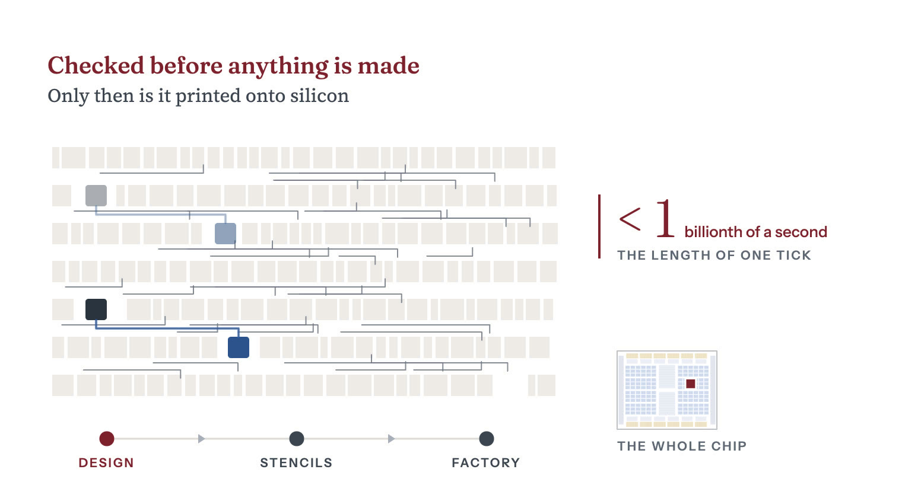

Stage 1 of 14Extreme concentrationHard to substitute
Chapter 1: Chip Design, EDA and IP
Synopsys, Cadence and Siemens EDA make the software used to design every advanced chip. In 2025 they took over 85 percent of its $18 billion market, licensed blocks included.
Sharma, Yashvardhan. “Chip Design, EDA and IP.” Chip Supply Chain: How AI Chips Are Made. Updated 29 October 2026. https://chipsupplychain.org/design-and-eda/
A GPU die based on Nvidia's published H100 block diagram. It is drawn at the size of one full reticle field, 26 by 33 mm, the largest area a scanner can print in one shot. H100 is a single die. The drawing adds a copper strip on one short edge to stand for the die-to-die link that two-die designs such as Blackwell carry.
In plain terms
design turns an idea for a new chip into a complete blueprint. A chip holds billions of , tiny electrical switches. The blueprint fixes where each one sits and how it is wired to the others. The chip runs on a clock, and a signal has to cross those wires within one tick, less than a billionth of a second. Software from three companies, Synopsys, Cadence and Siemens, lays out the blueprint, checks it and signs it off. A , a factory that makes chips for other companies, accepts only designs that have passed that software's checks. The foundry prints each layer of the design onto silicon through a stencil called a . Changing the blueprint once the masks are made takes new masks and a few months1.
In short
At , 7 and below, Synopsys alone has more than 90 percent of the market for , the check that every signal arrives in time2. SemiAnalysis wrote in May 2026 that no startup can replicate a complete design flow by writing it from scratch2.
Since October 2022 a US license has been needed to export design software specially made for with , a design the rule calls key to processes at 3 nm and below3. As of 2025, the think tank found Chinese design tools still far from replacing the full range of advanced capabilities US firms offer, especially for 5 nm and 3 nm chip design4. But Chinese design-software companies were winning share at older manufacturing processes, the research firm SemiAnalysis reported2.
Design is the only stage of the supply chain that happens entirely in software. The US government has restricted it with letters to the companies that sell that software. In late May 2025 the government required a license to sell to anyone in China5. Cadence cut off its Chinese customers until the government lifted the requirement on 2 July5.
- Who leads
- USSynopsys Over 90 percent of the timing-signoff market at advanced nodes as of 20262
- USCadence 55 to 60 percent of the hardware emulator market at advanced nodes as of 20262
- USSiemens EDA Over 85 percent of physical verification, the final layout check, at advanced nodes as of 20262
- GBArm About 50 percent of processor compute at the top cloud firms as of May 20267
- USBroadcom $16.7 billion of AI semiconductor revenue in the third quarter of fiscal 2026, custom accelerators and networking combined8
- Where it is made
- USUnited States Synopsys, Cadence, Broadcom, Marvell and Nvidia
- GBUnited Kingdom Arm processor and interconnect designs licensed from Cambridge, and since 2026 its own server chip
- TWTaiwan Alchip, Global Unichip and MediaTek: design services that carry a chip to the factory
- ILIsrael Annapurna Labs, the AWS design house behind Trainium and Graviton
- INIndia Nearly 20 percent of the world's chip design engineers, on the Indian government's count
China designs its own AI , but Huawei's most powerful chip in 2026, the Ascend 950, delivers about half the computing performance of Nvidia's H100 from 2022, on Epoch AI's estimate9. found that as of 2025 Chinese design tools were still far from replacing the full range of advanced capabilities US firms offer, especially for 5 and 3 nm chips4.
Synopsys and Cadence, the two largest design-software vendors by 2025 revenue, are American2.
How a chip is designed
How a chip is designed

- A blueprint. Making a chip starts with design, which turns an idea into a complete blueprint. The blueprint fixes where each of the chip’s billions of switches sits and how each one is wired to the others.
- One tick. The chip works in ticks, each less than a billionth of a second. On every tick a signal leaves a register, a small store that holds one number, and it has to cross its wire to the next register before the next tick.
- Too far. If the next register sits far away, the wire is long. The signal is still on its way when the next tick comes, so it arrives too late.
- Placed closer. Design software from three companies, Synopsys, Cadence and Siemens, places the parts and wires them together. Here it moves the register closer, and the signal arrives in time.
- Checked. The software checks that every signal arrives in time and that every shape can be printed, and a chip factory accepts only designs that pass the printing checks. The factory then prints the blueprint onto silicon through stencils, and changing it after that costs new stencils and a few months.
Design runs in five stages, all in software, and each stage's output is the next one's input.
- Architecture. Engineers fix the shape of the : the width of the block that multiplies numbers, the amount of fast beside it and the number of stacks along the chip's edges. The output is a plan.
- . Engineers write the plan as register-transfer-level code, RTL, in the hardware language SystemVerilog. A register is a small store on the chip that holds one number. On each tick of the chip's clock, every register takes its next value at the same moment. The code says what every register holds on every tick. The output is a text description of the whole chip.
- Verification. A large team checks that the code does what the plan says. They run it in simulation and prove parts of it correct with mathematics. They also load it into emulators, large machines full of reprogrammable chips that behave like the design, so the chip's own software can boot before any silicon exists.
- Physical design. Software swaps each piece of the code for a logic cell, a small ready-made circuit the has already proved it can make. It then places the cells on the chip, wires them together and proves that every signal arrives in time.
- . Engineers hand the finished layout to the foundry, a step called tape-out. After tape-out, software turns the layout into pattern files for the 10. First it pre-distorts each shape so that the shape prints as drawn, a step called optical proximity correction. Then it cuts the layout into the files a reads, a step called data preparation.
All that checking exists because each revision after tape-out, called a respin, needs at least some new masks1. In 2022 SemiAnalysis put a full mask set at more than $1 million at 28 and more than $10 million at 7 nm1. The nanometer labels name process generations, called , each finer than the last, and no longer measure anything. In 2022 SemiAnalysis also expected 3 nm sets to push into the $40 million range1. Its May 2026 primer still puts a mask set at $40 million, and a single leading-edge respin at $50 million to $100 million2.
The same 2022 SemiAnalysis article reported that startups had taken chips on TSMC 7 nm, then a leading-edge process, from design to tape-out for $50 million to $75 million, everything included1.
In 2022 SemiAnalysis forecast a 3 nm mask set at $40 million
What one photomask set costs, by node, 2022. The 28 nm and 7 nm figures are minimums, and 3 nm was a forecast
| 28 nm | $1M |
|---|---|
| 7 nm | $10M |
| 3 nm | $40M |
Sharma, Yashvardhan. “Figure 01.2: What one photomask set costs, by node, 2022.” Chip Supply Chain: How AI Chips Are Made. Updated 29 October 2026. https://chipsupplychain.org/design-and-eda/#fig-design-and-eda-mask-cost. Data: SemiAnalysis, The Dark Side of the Semiconductor Design Renaissance, July 2022. SemiAnalysis's May 2026 EDA Market Primer puts a leading-edge mask set at $40 million.
GPUs, custom chips and chiplets
Merchant GPU versus custom ASIC
Nvidia designs its Blackwell once and sells it to everyone, so the buyer gets mature software and a resale market. A , an ASIC, is built for one company's own workload. It handles a narrower range of tasks and is tuned to that workload. Google's tensor processing units () are custom accelerators of this kind11. Ironwood, the seventh generation, which Google announced in April 2025, carries 192 GB of memory per chip, six times its predecessor's, and delivers twice the performance per watt11. In April 2026 Google announced its eighth generation as two chips, the TPU 8t for training and the TPU 8i for , with up to twice Ironwood's performance per watt12.
The EDA flow
Chip design software is known as electronic design automation, or EDA. Three complete EDA flows exist, each a set of tools that covers every step from code to 6. SemiAnalysis wrote in May 2026 that no startup can replicate one by writing it from scratch2. Changing the synthesis tool, which swaps the code for logic cells, means re-running the steps that follow: placing and wiring the cells, signoff and physical verification2. Foundries also specify which signoff tools their customers must use for tape-out2.
For chips at advanced nodes, 7 nm and below, one vendor holds most of the market inside some steps of the flow. Synopsys alone has more than 90 percent of the market for static timing analysis, the check that every signal arrives in time at the chip's rated speed2. In May 2026 SemiAnalysis put Siemens EDA's Calibre at more than 85 percent of physical verification, the final layout check2. It put Cadence's Palladium at 55 to 60 percent of hardware emulation2.
In 2026 each segment's leading tool held at least 55 percent
Share held by the leading vendor in each of four design-software segments at advanced nodes, 7 nm and below. Lower end of each reported range
| Static timing (Synopsys PrimeTime) | 90% |
|---|---|
| Physical verification (Siemens Calibre) | 85% |
| Synthesis (Synopsys Design Compiler) | 84% |
| Emulation (Cadence Palladium) | 55% |
Sharma, Yashvardhan. “Figure 01.3: Share held by the leading vendor in each of four design-software segments at advanced nodes, 7 nm and below.” Chip Supply Chain: How AI Chips Are Made. Updated 29 October 2026. https://chipsupplychain.org/design-and-eda/#fig-design-and-eda-tool-lock. Data: SemiAnalysis, EDA Market Primer, May 2026, table of tool-level shares at advanced nodes.
Buy the IP or build it
Design houses license ready-made circuit blocks, known as or IP, including the processor cores, the interface controllers and the blocks that drive high-bandwidth memory. The block that drives high-bandwidth memory is hard to design, because its signals have to arrive in time across microscopic into a stacked memory .
Arm licenses processor designs. In fiscal 2026 it reported $4.92 billion of revenue, $2.61 billion of it royalties7. It said Arm-based designs held about 50 percent of the computing power of central processors (CPUs) at the top cloud firms7.
In 2026 Arm also launched the Arm AGI CPU, the first finished chip that Arm sells7. By May 2026, servers built on it could be ordered from ASRock, Lenovo, Quanta and Supermicro7.
is an open instruction set, the basic list of commands a processor understands, and it needs no license. Small RISC-V processors handle control tasks on the chip, and Nvidia uses them in every GPU13.
Chiplets
The caps the size of a single die, one piece of silicon14. That limit is the largest area a , the machine that prints the chip's pattern, can expose in one shot. Many large are built from , several smaller dies wired together inside one package15. is an open industry standard for the links between them15. Version 3.0 of UCIe adds two faster data rates, 48 and 64 billion transfers per second, written GT/s for gigatransfers per second15. In a December 2024 presentation, Broadcom described its 3.5D XDSiP platform, which stacks dies face to face and sets the stacks side by side on an 14. It said the platform packs more than 6,000 of silicon and 12 high-bandwidth memory stacks into one package14.
Who makes the design software and custom chips
Design software, simulation software and licensed blocks made up an $18 billion market in 2025, on SemiAnalysis's count2. Synopsys, Cadence and Siemens EDA took more than 85 percent of it, counting Ansys as part of Synopsys2. No other vendor had more than 5 percent of any of the main categories of design software2. Siemens EDA is a US-based subsidiary of the German firm Siemens16.
Synopsys is the largest. Its own results put revenue at $7.054 billion for the fiscal year to 31 October 2025, with Ansys, bought that July, contributing $756.6 million17. Cadence, whose year ends in December, took $5.297 billion in calendar 202518.
The two fiscal years do not line up, so any total for this market depends on which twelve months are counted. It also depends on how much of Ansys the total includes, because Ansys sells to other industries too. SemiAnalysis puts 31 percent of Ansys's business in semiconductors and high technology, 22 percent in aerospace and 18 percent in automotive2. It counts Synopsys at $8 billion for calendar 2025 with Ansys included2. On the same count Cadence is second, at $5.30 billion, and Siemens EDA third, at an estimated $2.2 billion to $2.5 billion2.
Chip firms such as Broadcom build custom accelerators to a customer's design and sell the finished chips. Broadcom booked $16.7 billion of AI semiconductor revenue in the third quarter of fiscal 2026, up 221 percent year over year8. That figure covers both its custom AI accelerators and its AI networking chips8.
Broadcom's custom-chip customers include OpenAI and Meta. In October 2025 OpenAI and Broadcom said they would deploy OpenAI-designed accelerators drawing 10 of power19. Broadcom would turn the design into silicon and supply the networking around it19. In April 2026 Broadcom and Meta extended their partnership to multiple gigawatts of MTIA, Meta's custom chip, including what they called the industry's first 2 nm AI accelerator20.
Marvell, another US firm, also builds custom AI chips to each customer's specifications21. Taiwanese design-service houses carry a customer's circuit list, the logic cells and the wires between them, all the way to a finished mask set on TSMC's newest nodes. One of them, Alchip, reported $992 million of revenue in 202522.
India has nearly 20 percent of the world's chip design engineers, the Indian government said in July 202523.
Design software export controls and China's own tools
In October 2025 found that only three companies, Cadence, Synopsys and Siemens, make design software that supports the entire chip design flow of more than 40 steps6. In late May 2025 the US , the agency that issues , told the design-software vendors that sales to China now needed a license5. Synopsys got its letter on 29 May and a second letter lifting the requirement on 2 July24. CSIS found that as of 2025 Chinese design tools were still far from replacing the full range of advanced capabilities US firms offer, especially for 5 nm and 3 nm chip design4.
Before the 2025 letters, a narrower control already applied. Since 14 October 2022, design software specially made for chips with has needed a US export license for national-security reasons3. The rule calls that design key to processes at 3 nm and below3. That license requirement covers exports to China25. The control carried out a December 2021 decision of the Wassenaar Arrangement, a group of countries that coordinate export controls3.
Cadence got its letter on 23 May5. The letter required a license to export design software and technology classified 3D991 and 3E991 to any party in China, or to a Chinese anywhere5. Unlike the 2022 control, the 2025 requirement came from the United States alone and took effect immediately.
Synopsys's China revenue fell from 16 percent of its total in fiscal 2024 to 12 percent in fiscal 20252. SemiAnalysis links the decline to tighter export restrictions and to local design-software companies winning share at 2. SemiAnalysis also quoted Synopsys's management saying that when Synopsys cannot sell to a company, that company looks for alternatives, typically local design-software and licensed-block companies2.
In a January 2021 report built on 2019 market data, the Center for Security and Emerging Technology (CSET) at Georgetown University found that one Chinese firm, Empyrean, could reportedly run a complete design flow only for some analog and mixed-signal chips26. Mixed-signal chips combine analog and digital circuits. For all other chips, Chinese designers then relied on US tools26. The report found that other Chinese tools covered only narrow parts of the design flow or supplemented US tools, and largely did not support processes at 14 nm and below26.
Empyrean says it has covered more of the design flow since then. Its 2025 annual report, filed in April 2026, says it now has complete design flows for analog, memory, radio-frequency and flat-panel display circuits27. It says it offers 80 percent of the main tools used in digital design28. The same report lists foundry certifications for its circuit simulator at 8, 5 and 4 nm and for its physical verification tool, the final layout check, at 28 nm29.
China can design accelerators, but it cannot finish one at the leading edge without foreign tools, or build what it designs without foreign equipment. SMIC, China's leading foundry, makes chips for Huawei9. In June 2024 CSET found that SMIC's limited 7 nm capacity forced Huawei to choose between making its most advanced phone chips and its AI chips30.
Epoch AI estimates that Huawei trails Nvidia both in what each chip can do and in how many chips it makes9. On Epoch's estimates, Huawei's flagship chip for 2026, the Ascend 950, delivers about half the computing performance of Nvidia's H100, which began shipping in 20229. Epoch puts Nvidia's B300 at 6.75 times the 950's theoretical peak performance9. Epoch's median estimate is that Huawei will make about 1.5 million Ascend chips in 2026, against 5.9 million for Nvidia9. On those estimates, Huawei's 2026 output would carry less than 4 percent of the computing power Nvidia ships that year9.
Epoch puts Huawei's chips three to four years behind Nvidia's until at least 2030, for three reasons9. SMIC cannot pack transistors as densely as TSMC, which makes Nvidia's. Chinese memory makers are only starting to produce high-bandwidth memory. And Huawei's software for programming its chips is far less mature than Nvidia's9.
Flashcards
Recall each answer, then turn the card.
What does chip design produce?
A blueprint of the chip that shows where each transistor sits and how the transistors are wired together.
A chip factory builds only designs that have passed checks in approved design software. Reread: How it works
Which three companies sell the software used to design leading-edge chips?
Synopsys, Cadence and Siemens EDA.
Together they held more than 85 percent of the $18 billion market for chip design software and licensed circuit blocks in 2025, counting Ansys as part of Synopsys. Reread: Who makes it
Why is it hard for a new company to compete with Synopsys, Cadence and Siemens EDA?
It would have to write a complete set of design tools from nothing and get a foundry to approve them.
Only three complete sets of design tools exist, each covering every step from code to signoff, the final checks. Foundries also specify which signoff tools their customers must use. Reread: The chokepoint
How close are Chinese design tools to replacing US tools for the newest chips?
As of 2025 they were still far from replacing the full range of US tools, especially for 5 nm and 3 nm chips, CSIS found.
Only Synopsys, Cadence and Siemens make tools for the entire design flow of more than 40 steps, CSIS found. China's Empyrean says its digital tools cover 80 percent of the main tools for digital design. Reread: The chokepoint
How far behind Nvidia is Huawei's best AI chip?
Three to four years, on Epoch AI's estimate.
Huawei's flagship for 2026, the Ascend 950, delivers about half the computing performance of Nvidia's H100, which began shipping in 2022. Reread: The chokepoint
Five things to remember
- Chip design turns an idea into a blueprint, and a factory builds only designs checked in approved software.
- Synopsys, Cadence and Siemens EDA sell the software used to design every leading-edge AI chip.
- To compete with them, a new vendor would have to write a complete set of tools and win a foundry's approval.
- China designs its own AI chips, but in October 2025 CSIS found its design software still far from replacing US tools, especially for 5 nm and 3 nm chips.
- Huawei's best AI chip trails Nvidia's by three to four years, on Epoch AI's estimate.
Sources (30)
Source tiers A company filings, governments, standards bodies, universities and research institutions. B SemiAnalysis, Reuters, the Financial Times and Nikkei Asia.
- BThe Dark Side Of The Semiconductor Design Renaissance – Fixed Costs Soaring Due To Photomask Sets, Verification, and Validation
- BEDA Market Primer
- AImplementation of Certain 2021 Wassenaar Arrangement Decisions on Four Section 1758 Technologies
- AThe Double-Edged Sword of Semiconductor Export Controls: Electronic Design Automation
- ACadence Design Systems, current report on Form 8-K dated 2 July 2025
- AThe Double-Edged Sword of Semiconductor Export Controls: Electronic Design Automation
- AArm delivers record-breaking quarter and full-year results
- ABroadcom, current report on Form 8-K dated 2 September 2026
- AWill Huawei catch up to Nvidia by 2030?
- AUnlocking post-tapeout flow scalability and performance with cloud computing
- AIronwood: The first Google TPU for the age of inference
- AOur eighth generation TPUs: two chips for the agentic era
- ABehind The Scenes of SHD Group's 2026 RISC-V Market Forecast
- A3.5D XDSiP Platform Technology
- AUCIe specifications
- AThe Double-Edged Sword of Semiconductor Export Controls: Electronic Design Automation
- ASynopsys, current report on Form 8-K dated 10 December 2025
- ACadence Design Systems, current report on Form 8-K dated 17 February 2026
- AOpenAI and Broadcom announce strategic collaboration to deploy 10 gigawatts of OpenAI-designed AI accelerators
- ABroadcom Announces Extended Partnership with Meta to Deploy Technology to Support Multi-Gigawatts of Meta's Custom Silicon, MTIA
- AMarvell Technology, annual report on Form 10-K for the fiscal year ended 31 January 2026
- AAlchip Technologies, financials page
- AIndia’s Semiconductor Vision Gathers Momentum with 3nm Chip Design and Large-Scale Talent Development Initiatives
- ASynopsys, current report on Form 8-K dated 2 July 2025
- ASupplement No. 1 to Part 738, Title 15 -- Commerce Country Chart
- AThe Semiconductor Supply Chain - Issue Brief
- A北京华大九天科技股份有限公司2025年年度报告全文
- A北京华大九天科技股份有限公司2025年年度报告全文
- A北京华大九天科技股份有限公司2025年年度报告全文
- APushing the Limits: Huawei's AI Chip Tests U.S. Export Controls